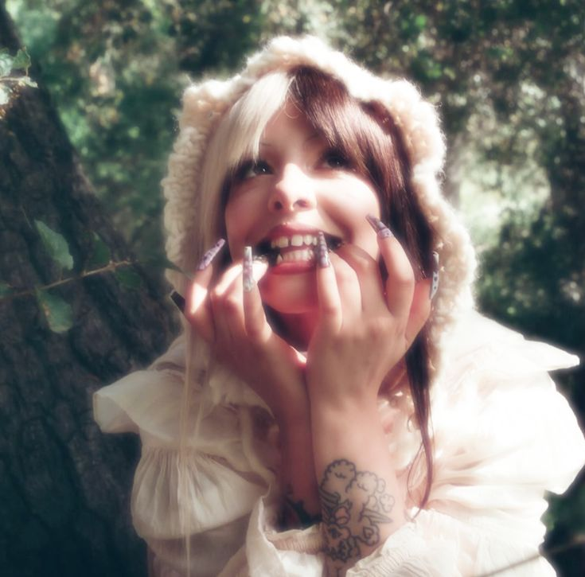
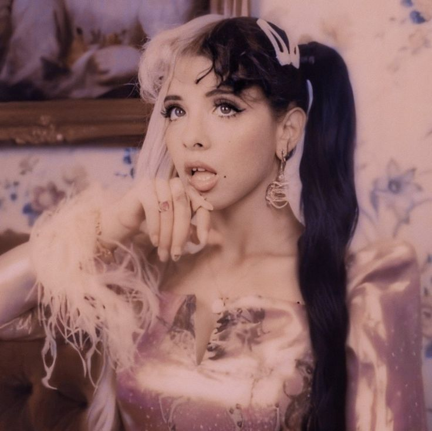

melanie martiniez
| повне ім'я: | Мелані Адель Мартінез |
|---|---|
| Сценічні псевдоніми: | Melanie Martinez |
| Дата народження: | 28 квітня 1995 року. |
| Місце народження: | Асторія, Квінз, Нью-Йорк, США. |
улюблені пісні та альбоми (деякі) >>>
Сім'я та ранні роки
Мелані виросла в родині з домініканським та пуерториканським корінням. З дитинства вона була дуже емоційною дитиною, за що однокласники прозвали її «Cry Baby» (плаксійка) — це прізвисько згодом стало основою її головного творчого альтер-его.
Вона почала писати вірші та займатися музикою ще в початковій школі. Самостійно навчилася грати на гітарі, вивчаючи акорди в інтернеті. Крім музики, Мелані захоплювалася фотографією та малюванням, що розвинуло її унікальне візуальне бачення. Батьки підтримували її творчі починання, хоча сама Мелані згадувала, що часто почувалася «білою вороною» через свій специфічний стиль одягу та інтереси.
Початок кар'єри та The Voice (2012–2014)
Шлях до великої сцени почався у 2012 році, коли 17-річна Мелані взяла участь у третьому сезоні американського шоу «The Voice».
- Сліпі прослуховування: Вона вразила суддів кавер-версією пісні Брітні Спірс «Toxic», акомпануючи собі на гітарі та бубні ногами.
- Результат: Мелані потрапила в команду Адама Левіна і дійшла до Топ-6. Хоча вона не перемогла, участь у шоу дала їй базу фанатів та можливість почати роботу над власним матеріалом.
У 2014 році вона випустила дебютний сингл «Dollhouse», який став візитною карткою її стилю: поєднання дитячої естетики з «дорослими» та похмурими темами (сімейні проблеми, залежності, фальш).
Світовий успіх: Ера Cry Baby та K-12 (2015–2019)
Мелані Мартінез стала символом концептуального поп-арту:
- "Cry Baby" (2015): Дебютний альбом став платиновим. Це була цілісна історія вигаданого персонажа Cry Baby. Альбом піднімав теми невпевненості, першого кохання та суспільного тиску. Кліпи на пісні «Pity Party» та «Mad Hatter» набрали сотні мільйонів переглядів.
- "K-12" (2019): Після чотирирічної перерви Мелані випустила другий альбом разом із повнометражним сюрреалістичним фільмом, де вона виступила режисером та сценаристом. Сюжет розповідає про пригоди Cry Baby у моторошній школі-інтернаті. Цей проект закріпив за нею статус візіонерки.

Особистий стиль та філософія
Творчість Мелані неможливо відокремити від її візуального образу:
- Естетика: Вона використовує іграшки, пастельні кольори, мереживо та вінтажні лялькові атрибути для контрасту з гострими соціальними текстами.
- Теми: Мартінез часто критикує стандарти краси («Mrs. Potato Head»), тиск індустрії та проблеми ментального здоров'я. Вона відверто говорить про свою бісексуальність та підтримку прав людини.
Трансформація: Ера Portals (2023 — до сьогодні)
У 2023 році Мелані здійснила радикальний ребрендинг з альбомом "Portals". Вона оголосила про «смерть» персонажа Cry Baby та її переродження в новій формі.
- Новий образ: Тепер Мелані виступає у складному гримі та протезах чотириокої рожевої істоти з іншого світу. Вона повністю відмовилася від показу свого людського обличчя під час виступів та в кліпах.
- Звучання: Музика стала більш експериментальною, з елементами альтернативного року та арт-попу, а тексти зосередилися на темах смерті, реінкарнації та духовного росту.
Спадщина та вплив
- Рекорди:Усі пісні з альбому Cry Baby отримали золоті або платинові сертифікації в США, що є рідкісним досягненням.
- Візуальний вплив:Мелані довела, що артист може бути успішним, створюючи цілісні візуальні всесвіти без підтримки великих радіостанцій, покладаючись на YouTube та TikTok (де її пісня «Play Date» стала вірусною через роки після релізу).
- Унікальність:Вона поєднує в собі співачку, режисера, фотографа та дизайнера костюмів, контролюючи кожен аспект своєї творчості.
Мелані Мартінез залишається однією з найбільш самобутніх артисток сучасності, яка вчить своїх фанатів не боятися власної «дивакуватості» та перетворювати свої травми на мистецтво.
